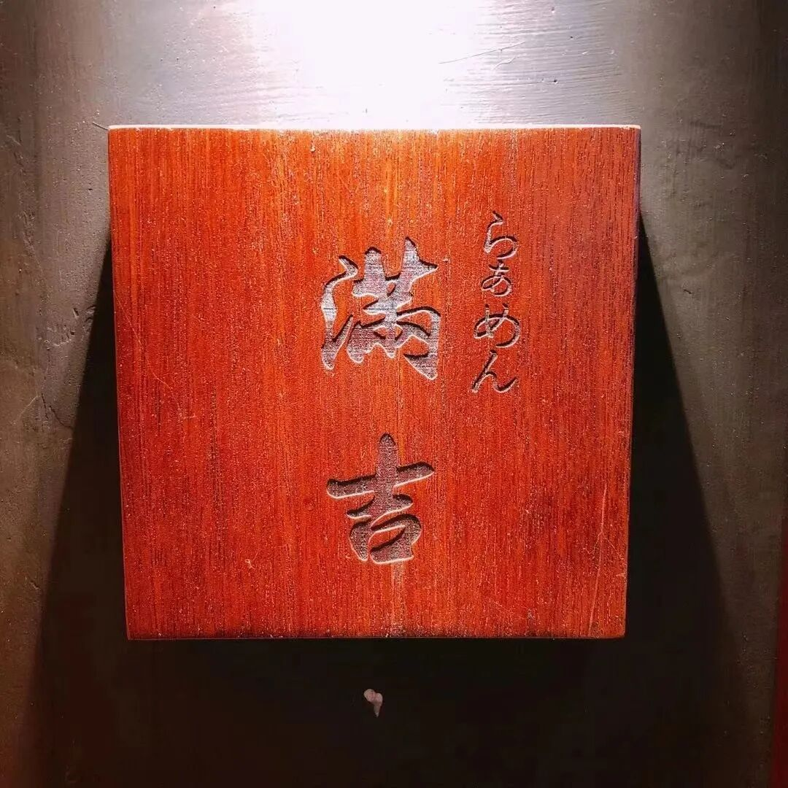
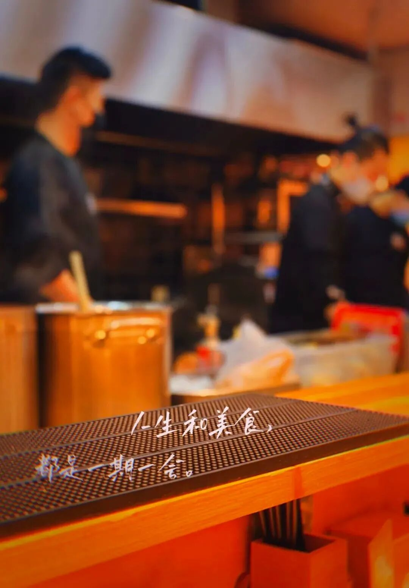
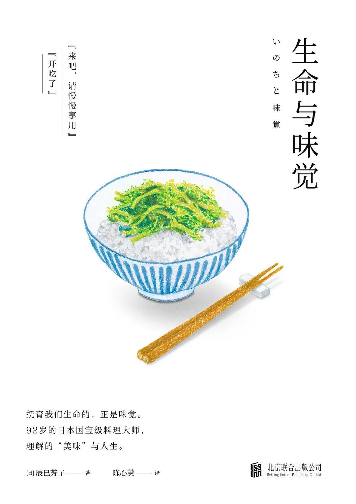
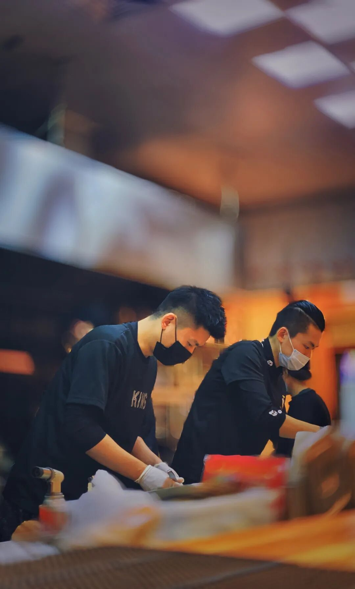

人生和美食，都是一期一会
最近，米其林推荐的「金色不如帰」（SOBAHOUSE）在国金开业了。
据说是拉面界的 Top 3，使用大蚬、豚骨、鱼介等矜贵食材熬汤，即使从新宿开到陆家嘴，仍要排几小时长队。所以，纵然我有一片吃心，还是果断放弃了。
比起过分执着地追求，倒不如暂时允许一个愿望未实现。人间正是因为有喜怒哀乐，欲望不能完全满足，想吃的东西吃不到，你爱的人一点都不听使唤，才好玩。
好在上海是一个随处都能吃到世界美食的城市，上月疫情还没爆发时，我正好路过老卢湾，在宝泰面馆附近，吃了「満吉」。

丽园路窄窄的沿街铺面里藏着一家早就想去吃的店「満吉拉面」（らぁめん みつよし）是我迄今为止，在国内吃过最好吃的拉面。
什么叫做好，很主观。
一碗面并不是什么稀奇的食物，你什么时候特别想吃，而它恰巧就在那里，什么就是最好。
毕竟，人生和美食，都是一期一会。

摘过米其林的店，再小也有自己脾气。窄窄吧台只容得下十余个座位，晚来的客人只能在冷风里站着等位。好在过了饭点，门口加上我也就寥寥数人排队。
有个厨师穿黑色制服，高瘦白皙，眼神澄净，从店里走出来抽烟，与排在前面的老客人打招呼：组撒伐进去？
老客人拎得清地回答：没事体，等一歇。
待到进店，发现还要等前面的食客用餐完毕才能落座。我也不急，在狭小温暖的木屋里闻着拉面香，随手拿起玄关里唯一的书打发时间。

97岁日本国宝级料理大师辰巳芳子撰写
与其说是教人料理不如说是一本以料理体悟生命在厨房中思考生活哲学的书
这本破旧泛黄，甚至沾有油渍的书，开篇就提出了一个问题：
人为什么一定要吃东西？
认为这是理所当然的人，是否仅从自身的角度来思考，而无法看到事物的本质呢？
科学家舍恩海默曾科学地分析吃东西的意义：食物不仅是单纯的能量来源，吃进去的东西还会与身体进行交换，食物的分子会逐渐变成我们身体的一部分。只要三个月，人的身体就会替换成吃进去的东西。
那么我们应该怎么吃呢？
享用季节的恩惠和风土的慈爱，是让生存变得容易的最好方式。
都市生活令人丧失了最重要的“感应力”，很难再被世间万物深刻感动。当季食材很难寻觅，餐桌上的四季消失了，超市里一年四季摆放的是温室瓜果，越来越多的人吃不出味道。无法感应的人，当然也无法感觉美味。
想要磨炼感应力，培养直觉灵感，茶道和料理都可以教我们。
辰巳芳子用一道道朴实的当季料理来举例：
确认煮沸的糙米汤是否完成，尝的不是锅中的汤，而是之后不会食用的糙米，品尝应该丢弃的东西，从而判断留下的东西的价值。这与心灵的修行相同，判断的不是什么该留在心中，而是什么该舍。
亲自用昆布、小鱼干、香菇炖煮味噌汤，比直接使用调料麻烦，但能否将不得不的事做好，与上进心有关。继续坚持，等到不费力就能完成这件事时，感应力已磨炼得能更敏锐地感知分辨世间所有善恶，亲力亲为势必会有收获。

看到这里，拉面和小菜已由刚才那位厨师奉上，并轻声提醒我将皮草挂在椅背，防止拉面的油渍弄脏。
我有点诧异，他穿着干净利落，服务如高级西餐厅般仔细周到，很与众不同呢！我疑惑地掏出手机搜索，竟是创始人兼主厨徐吉先生。
一家米其林推荐的日式餐厅，主厨竟是一个上海男人？他与店员一起脚踏实地地劳作，沉默不多语，一丝不苟。汤头和面的口味一点不输在日本本土吃到名店。

吃完拉面，我将《生命与味觉》归还，这本被他供奉在玄关的书，可能传达了与他本人同样的料理哲学和态度。
这本书也鼓舞了我。
这几天上海疫情爆发，居家隔离期间，我从市场上挑选了一些新鲜食材让外卖员送到家，找出仅有的一些炊具，剩下的得等搬新家时才能选购补齐，但我很想学一学，把它们重新用起来。
不论是有名或无名的店
如果你有自己的 Taste
就会发现一些好东西
只是，他们可能迟早会成为大众点评上的网红
在此之前，期待它们就这样在街角
静悠悠地开着吧
…

2022.03.06
——
END